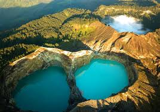
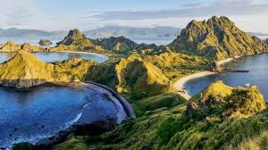
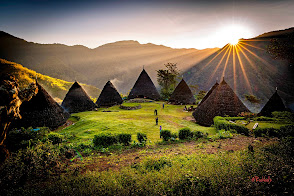
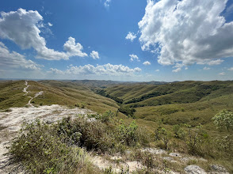

Pink Beach
Pink Beach adalah pantai di Labuan Bajo,
Nusa Tenggara Timur (NTT) yang terkenal
dengan pasirnya berwarna merah muda.
Pantai ini merupakan salah satu destinasi wisata
yang populer dan langka di dunia.
Rating :
Danau Kalimutu

Danau Kelimutu adalah danau kawah
yang terletak di puncak Gunung Kelimutu,
Pulau Flores, Nusa Tenggara Timur.
Danau ini terkenal karena memiliki
tiga danau yang berwarna berbeda-beda,
yaitu biru, merah, dan putih.
Rating :
Taman Nasional Pulau Komodo
Pulau Komodo adalah pulau di Indonesia
yang menjadi habitat asli komodo,
kadal terbesar di dunia. Pulau ini terletak
di Kepulauan Nusa Tenggara,
Provinsi Nusa Tenggara Timur.
Rating :
Pulau Kepa
.jpg)
Pulau Kepa adalah sebuah pulau kecil di
Kabupaten Alor, Nusa Tenggara Timur yang
merupakan salah satu destinasi wisata populer.
Pulau ini memiliki perairan biru jernih dan
pemandangan alam yang indah.
Rating :
Kolam Bidadari
.jpg)
Sesuai namanya, kolam yang terletak di Kolar,
Kabupaten Alor, itu memang cantik
layaknya bidadari, yang membuat wisatawan
ingin berkunjung ke sana.
Rating :
Pulau Padar

Pulau Padar adalah pulau kecil di
Taman Nasional Komodo, Nusa Tenggara Timur.
Pulau ini merupakan destinasi wisata
populer karena keindahan alamnya.
Rating :
Waerebo Village

Wae Rebo adalah sebuah desa adat terpencil
di Kabupaten Manggarai, Nusa Tenggara Timur.
Desa ini terkenal sebagai desa di atas awan
dan merupakan salah satu destinasi wisata
budaya di Indonesia.
Rating :
Bukit Wairinding

Bukit Warinding adalah destinasi wisata
di Sumba Timur, Nusa Tenggara Timur (NTT)
yang terkenal dengan pemandangan
matahari terbenamnya. Bukit ini juga
memiliki jalur pendakian yang menantang.
Rating :